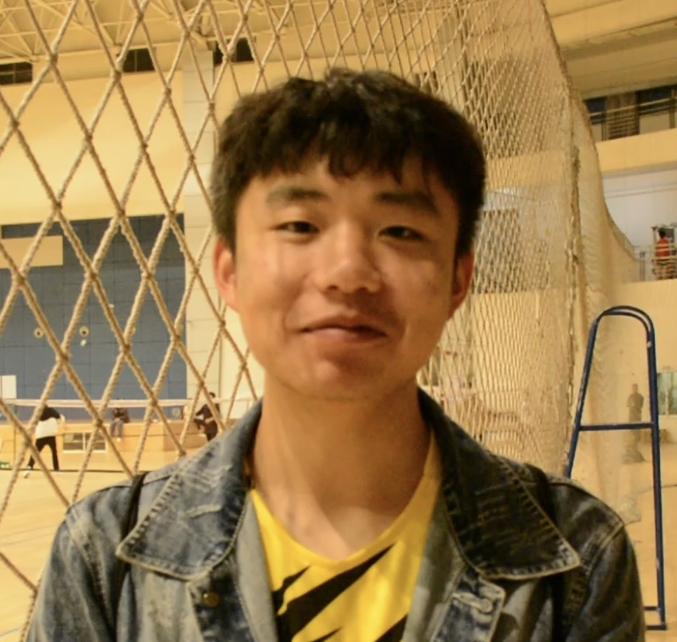
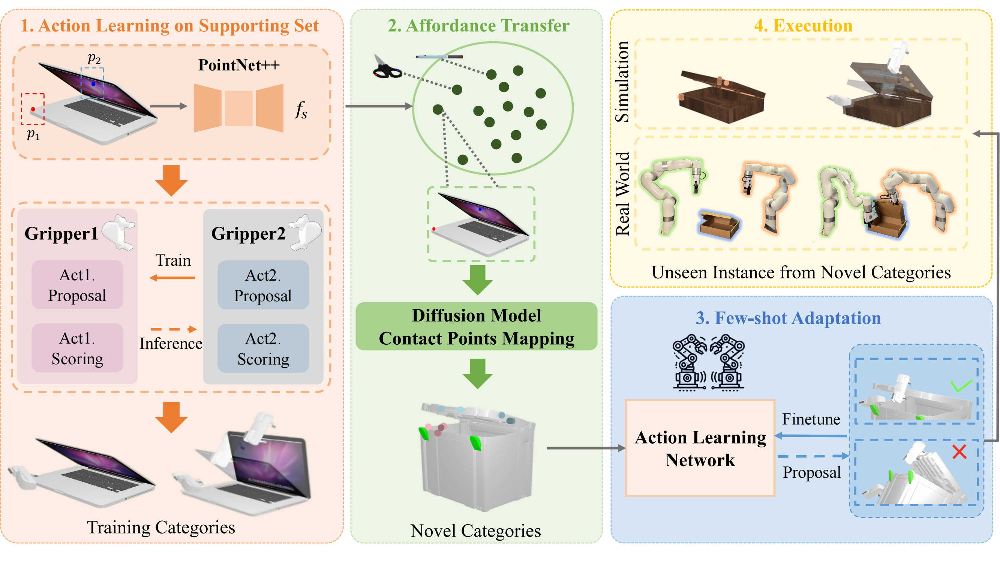
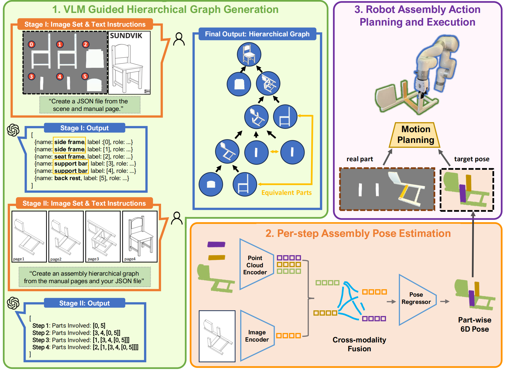
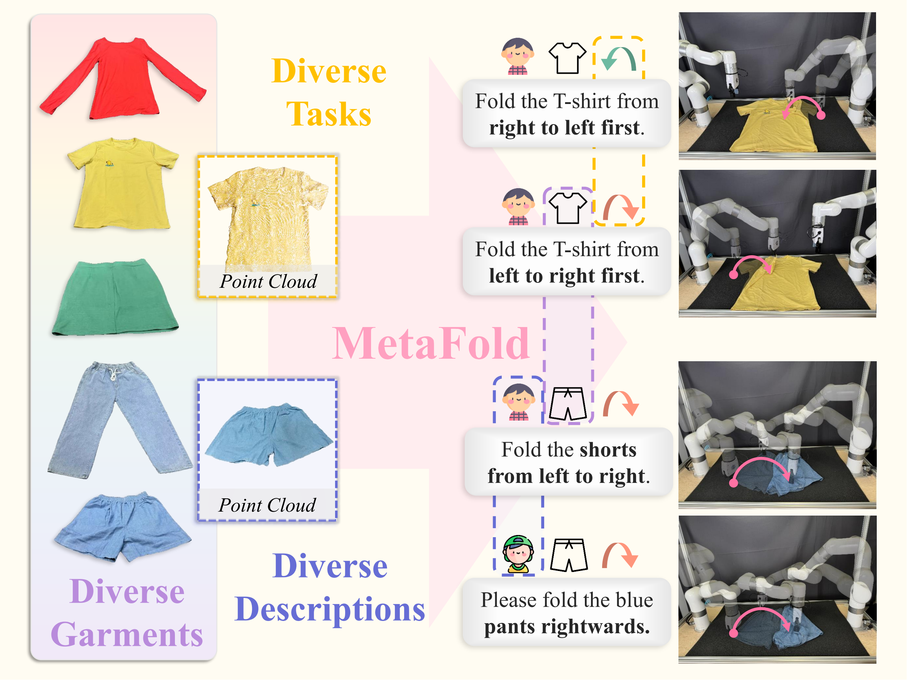
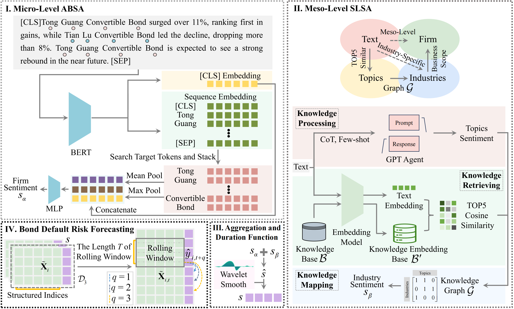
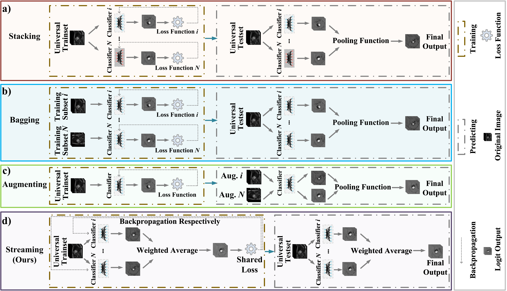

|
Yiwei Liu | 刘益伟 I am a fourth-year undergrad student majoring in Software Engineering at Sichuan University. Currently, I am a research assistant at National University of Singapore advised by Prof. Lin Shao (邵林). I'm looking for Ph.D. program opportunities on 25fall or 26spring. If you are interested in collaborating, just feel free to contact me. |
 |
Research (* denotes equal contribution)I'm interested in Computer Vision, Embodied AI, and Fintech. |
|  |
Bi-Adapt: Few-shot Bimanual Adaptation for Novel Categories of 3D Objects via Semantic Correspondence
Jinxian Zhou, Ruihai Wu, Yiwei Liu, Yiwen Hou, Xunzhe Zhou, Checheng Yu, Licheng Zhong, Lin Shao website Bi-Adapt is a novel framework that integrates category-specific object features, task-level manipulation goals, and a few-shot adaptation strategy based on contact point selection to enable diverse and effective bi-manual manipulation. |
|
|  |
Manual2Skill: Learning to Read Manuals and Acquire Robotic Skills for Furniture Assembly Using Vision-Language Models
Chenrui Tie*, Shengxiang Sun*, Jinxuan Zhu, Yiwei Liu, Jingxiang Guo, Yue Hu, Haonan Chen, Junting Chen, Ruihai Wu, Lin Shao Proceedings of Robotics: Science and Systems (RSS) 2025 arXiv / website / bibtex A novel framework that enables robots to autonomously perform complex assembly tasks in real-life guided by high-level manual instructions. |
|
|  |
MetaFold: Language-Guided Multi-Category Garment Folding Framework via Trajectory Generation and Foundation Model
Haonan Chen*, Junxiao Li*, Ruihai Wu, Yiwei Liu, Yiwen Hou, Zhixuan Xu, Jingxiang Guo, Chongkai Gao, Zhenyu Wei, Shensi Xu, Jiaqi Huang, Lin Shao arXiv / website / bibtex MetaFold employs language-guided point cloud trajectories for task planning and a foundation model for action prediction, enabling better generalization across garments and instructions. |
|
|  |
A Multi-Level Sentiment Analysis Framework for Financial Texts
Yiwei Liu, Junbo Wang, Lei Long, Xin Li, Ruiting Ma, Yuankai Wu, Xuebin Chen arXiv / code / bibtex We propose a novel framework based on PLMs and LLMs, which systematically integrates firm-specific micro-level sentiment, industry-specific meso-level sentiment, and duration-aware smoothing to model the latency and persistence of textual impact. "This work is worth more discussion, and I am open to collaboration." |
|
|  |
Memory-based Ensemble Learning in CMR Semantic Segmentation
Yiwei Liu, Ziyi Wu, Liang Zhong, Lingyi Wen, Yuankai Wu arXiv / code / bibtex We propose an ensemble learning paradigm, Streaming, to enhance end-slice accuracy while maintaining near-SOTA DSC performance on cardiac MRI datasets. |
|
Education |
|
|
National University of Singapore
Aug 2024 - May 2025, Visiting Student (NGNE), School of Computing. May 2023 - Aug 2023, Summer Workshop (First Prize, A+ Student), School of Computing. Spotlight Project: Motion Sensing FPS Game (CS3247 Game Development) |
|
|
|
Sichuan University
Jul 2022 - Jun 2025, Bachelor of Software Engineering, College of Software Engineering. Sep 2021 - Jul 2022, Bachelor of Materials (General Track), College of Materials Science and Engineering. |
|
Employment |
|
ByteDance, Chengdu
Jul 2025 - Now, Multimodal LLMs Researcher. |
||
|
|
Siemens Electronics Works Chengdu (SEWC), Chengdu
Jan 2024 - Jun 2024, Embodied AI Intern. demo / testimonial |
|
Miscellanea
|
{kind=link}
Visitors |